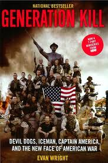

Generation Kill was a book made into an HBO series about some Marines in Iraq and all of the hell they went through. It may not have been the most popular book but I think it is a good book so that we remember those who died and the ones who are still here and fought for our freedom.
